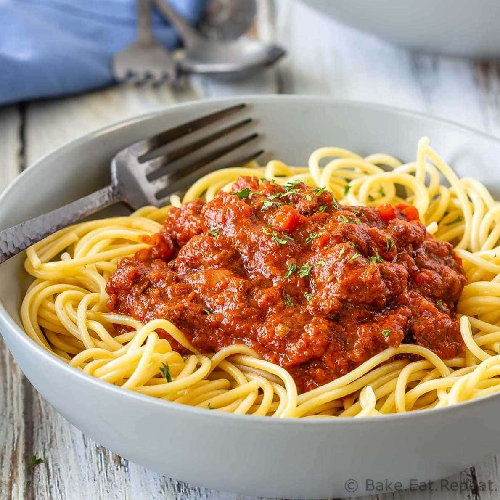

SPAGHETTI BOLOGNESE

Spaghetti Bolognese, an iconic Italian dish, is a mouthwatering symphony of flavors. The star of this delectable
pasta creation is the rich and savory Bolognese sauce that generously coats al dente spaghetti. The sauce is a
labor
of love, simmered to perfection with a medley of ingredients. Ground meat, such as beef and pork, is lovingly
sautéed with aromatic onions and garlic, then combined with tomatoes, herbs, and sometimes a splash of red wine.
This luscious sauce develops depth
as it simmers, resulting in a velvety texture and robust taste that harmonizes beautifully with the pasta. The
marriage of tender spaghetti and the hearty Bolognese sauce is a timeless classic that never fails to satisfy
the palate.
Recipe
Ingredients
- Spaghetti noodles
- Ground meat (beef and pork)
- Onions
- Garlic
- Tomatoes (fresh or canned)
- Tomato paste
- Red wine (optional)
- Herbs (such as basil, oregano, and thyme)
- Olive oil
- Salt and pepper
- Sugar (optional, for balancing flavors)
- Grated Parmesan cheese (for garnish)
- Fresh basil leaves (for garnish)
Instructions
- Cook the spaghetti noodles according to the package instructions. Drain and set aside.
- In a large skillet, heat some olive oil over medium heat. Add the onions and garlic, and sauté until they
become translucent.
- Add the ground meat to the skillet and cook until browned. Break it up into smaller pieces using a spatula
or wooden spoon.
- Add the tomatoes, tomato paste, and herbs to the skillet. Stir well to combine.
- If using, pour in the red wine and simmer for a few minutes to allow the flavors to meld together.
- Reduce the heat to low and let the sauce simmer for about 30 minutes, stirring occasionally. This will help
develop the flavors.
- Taste the sauce and season with salt, pepper, and sugar (if desired) to balance the flavors.
- Divide the cooked spaghetti into serving plates or bowls.
- Ladle the Bolognese sauce over the spaghetti, ensuring each portion is generously coated.
- Garnish with grated Parmesan cheese and fresh basil leaves.
- Serve hot and enjoy!
Back to Main